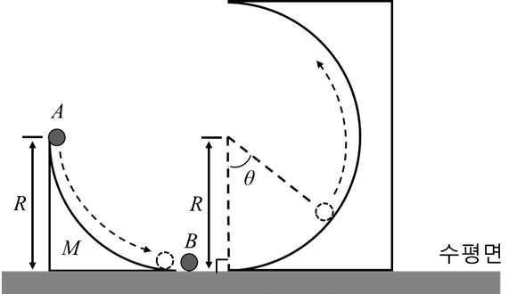

해설 1
(문제 1-1) [15점]

역학적 에너지 보존 법칙을 이용하여 수평면에서 물체 A의 속도를 구한다. (2점)
1) 역학적 에너지 보존 법칙을 이용하여 수평면에서 질량이 \(m\)인 물체 A의 속도 \(v_A\)를 구한다.
\[mgR = \frac{1}{2}mv_A^2\]
\[v_A = \sqrt{2gR}\]
운동량 보존 법칙과 운동 에너지 보존 법칙을 이용하여 충돌 후 물체 B의 속도 \(v'_B\)를 구한다. (7점)
2) 운동량 보존 법칙과 운동 에너지 보존 법칙을 이용하여 수평면에서 충돌 후 물체 B의 속도 \(v'_B\)를 구한다. 물체 B의 질량 \(m_B = \alpha m\) 이라고 한다. (\(\alpha > 0\))
\[mv_A = mv'_A + \alpha mv'_B \quad \text{여기서 } v'_A \text{는 충돌 후 A의 속도}\]
\[\frac{1}{2}mv_A^2 = \frac{1}{2}mv'^2_A + \frac{1}{2}\alpha mv'^2_B\]
1)에서 구한 \(v_A = \sqrt{2gR}\)과 앞에 두식을 연립해서 풀면
\[v'_B = \frac{2\sqrt{2gR}}{\alpha + 1}\]
를 구할 수 있다.
역학적 에너지 보존 법칙을 이용하여 \(\theta = 180°\)인 지점에서 물체 B의 속도의 제곱을 구한다. (3점)
3) 역학적 에너지 보존 법칙을 이용하여 \(\theta = 180°\)인 지점에서 질량이 \(\alpha m\)인 물체 B의 속도의 제곱 \(v''^2_B\)를 구한다.
\[\frac{1}{2}\alpha m v'^2_B = \frac{1}{2}\alpha m v''^2_B + \alpha m g 2R\]
2)에서 구한 \(v'_B = \dfrac{2\sqrt{2gR}}{\alpha + 1}\)를 대입해서 풀면
\[v''^2_B = \frac{8gR}{(\alpha + 1)^2} - 4gR\]
를 구할 수 있다.
\(\theta = 180°\)인 지점에서 구심력과 중력을 비교하여 B의 질량 범위를 구한다. (3점)
4) \(\theta = 180°\)인 지점에서 구심력과 중력을 비교한다. 이 지점까지 물체 B가 올라가기 위해서는 구심력이 중력보다 크거나 같아야한다. 이를 이용하여 B의 질량 범위를 구한다.
\[\alpha m \frac{v''^2_B}{R} \geq \alpha mg, \quad \frac{v''^2_B}{R} \geq g\]
\[v''^2_B \geq gR\]
3)에서 구한 \(v''^2_B = \dfrac{8gR}{(\alpha + 1)^2} - 4gR\)를 대입해서 풀면
\[\frac{8gR}{(\alpha + 1)^2} - 4gR \geq gR, \quad \frac{8}{(\alpha + 1)^2} \geq 5\]
\[\frac{8}{5} \geq (\alpha + 1)^2, \quad \alpha + 1 \leq \sqrt{\frac{8}{5}}, \quad \alpha \leq \sqrt{\frac{8}{5}} - 1\]
\[\therefore 0 < m_B \leq \left(\sqrt{\frac{8}{5}} - 1\right)m\]
(문제 1-2) [15점]
역학적 에너지 보존 법칙을 이용하여 수평면에서 물체 A의 속도를 구한다. (7점)
1) 질량 \(M\)의 속력을 \(V\), 질량 \(m\)인 A가 구면을 떠날 때의 속력을 \(v_A\)라고 하자.
운동량 보존 : \(mv_A = MV \quad \Rightarrow \quad V = \dfrac{m}{M}v_A\)
역학적 에너지 보존 : \(\dfrac{1}{2}MV^2 + \dfrac{1}{2}mv_A^2 = mgR\)
위 두식을 이용하여 결과 도출
\[\frac{1}{2}M\left(\frac{m}{M}v_A\right)^2 + \frac{1}{2}mv_A^2 = mgR\]
\[\frac{1}{2}\frac{m(m + M)}{M}v_A^2 = mgR \quad \Rightarrow\]
\[v_A^2 = 2gR\frac{M}{m + M} \quad \therefore v_A = \sqrt{2gR\frac{M}{m + M}}\]
운동량 보존 법칙과 운동 에너지 보존 법칙을 이용하여 충돌 후 물체 B의 속도 \(v'_B\)를 구한다. (2점)
2) 운동량 보존 법칙과 역학적 에너지 보존 법칙을 이용하여 수평면에서 충돌 후 물체 B의 속도 \(v'_B\)를 구한다. 물체 B의 질량 \(m_B = \alpha m\) 이라고 한다. (\(\alpha > 0\))
\[mv_A = mv'_A + \alpha mv'_B \quad \text{여기서 } v'_A \text{는 충돌 후 A의 속도}\]
\[\frac{1}{2}mv_A^2 = \frac{1}{2}mv'^2_A + \frac{1}{2}\alpha mv'^2_B\]
1)에서 구한 \(v_A = \sqrt{2gR\dfrac{M}{m + M}}\)와 앞에 두식을 연립해서 풀면
\[v'_B = \frac{2}{\alpha + 1}\sqrt{2gR\frac{M}{m + M}}\]
를 구할 수 있다.
역학적 에너지 보존 법칙을 이용하여 \(\theta = 180°\)인 지점에서 물체 B의 속도의 제곱을 구한다. (2점)
3) 역학적 에너지 보존 법칙을 이용하여 \(\theta = 180°\)인 지점에서 질량이 \(\alpha m\)인 물체 B의 속도의 제곱 \({v''}_B^2\)를 구한다.
\[\frac{1}{2}\alpha m v'^2_B = \frac{1}{2}\alpha m v''^2_B + \alpha m g 2R\]
2)에서 구한 \(v'_B = \dfrac{2}{\alpha + 1}\sqrt{2gR\dfrac{M}{m + M}}\)를 대입해서 풀면
\[v''^2_B = \frac{8gR}{(\alpha + 1)^2}\left(\frac{M}{m + M}\right) - 4gR\]
를 구할 수 있다.
\(\theta = 180°\)인 지점에서 구심력을 비교하여 M의 조건을 구한다. (4점)
4) \(\theta = 180°\)인 지점에서 구심력과 중력을 비교한다. 이 지점까지 물체 B가 올라가기 위해서는 구심력이 중력보다 크거나 같아야한다. 이를 이용하여 B의 질량 범위를 구하고 그 질량이 0보다 크다는 사실을 이용하여 M의 조건을 구한다.
\[\alpha m \frac{v''^2_B}{R} \geq \alpha mg, \quad \frac{v''^2_B}{R} \geq g\]
\[v''^2_B \geq gR\]
3)에서 구한 \(v''^2_B = \dfrac{8gR}{(\alpha + 1)^2}\left(\dfrac{M}{m + M}\right) - 4gR\)를 대입해서 풀면
\[\frac{8gR}{(\alpha + 1)^2}\left(\frac{M}{m + M}\right) - 4gR \geq gR, \quad \frac{8}{(\alpha + 1)^2}\left(\frac{M}{m + M}\right) \geq 5\]
\[\frac{8}{5}\left(\frac{M}{m + M}\right) \geq (\alpha + 1)^2, \quad \alpha + 1 \leq \sqrt{\frac{8}{5}\left(\frac{M}{m + M}\right)}, \quad \alpha \leq \sqrt{\frac{8}{5}\left(\frac{M}{m + M}\right)} - 1\]
\[\therefore 0 < m_B \leq \left(\sqrt{\frac{8}{5}\left(\frac{M}{m + M}\right)} - 1\right)m\]
\(m_B > 0\) 때문에 \(\sqrt{\dfrac{8}{5}\left(\dfrac{M}{m + M}\right)} - 1 > 0\) 이다.
\[\frac{8}{5}\left(\frac{M}{m + M}\right) > 1, \quad \frac{M}{m + M} > \frac{5}{8}\]
\[M > \frac{5}{8}m + \frac{5}{8}M, \quad \frac{3}{8}M > \frac{5}{8}m\]
\[\therefore M > \frac{5}{3}m\]